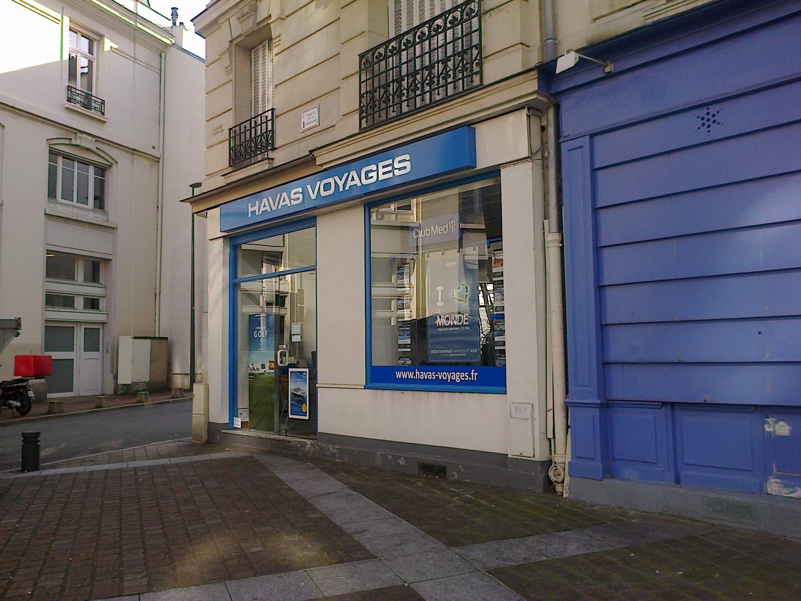

Incidents / Outage ·
Was the Travelsoft Orchestra outage a hack?
Also reported as the Orchestra outage and the Travelsoft hack.


Is it a hack? The short answer
Says it was hackedYes, by the company's own account: its president says Orchestra was the victim of a cyberattack with illicit access, and that it shut its systems down. How they got in and who did it are not known.
How well supported Confirmed
Rests on Orchestra was hit by a cyberattack, the company's president says · The company shut down all its systems as a precaution · Booking sites of Voyages E.Leclerc, Carrefour Voyages, Selectour and Havas Voyages went offline
This is the current answer, not a final verdict. A final verdict is published only after the site's owner has reviewed the evidence.
How much do you want to read?
The latest ·
Travelsoft says the last customer platform was back on Monday morning, Nov 23.
Is it back?
Partly back at our last check. All customer platforms were back by Monday morning, Nov 23, the company says. evidence
How big is it?
Regional. A booking platform behind about 60 business customers, per the company's president, including major French travel brands and agency tools. No count of travelers has been given.
Who is affected?
Customers and staff of travel brands that use Orchestra, including Voyages E.Leclerc, Carrefour Voyages, Selectour and Havas Voyages, and the travel agents who book through it.
Known so far
Not known yet
- Whether data was stolen.
- Whether logins were taken, as TourMaG reports.
- How the attackers got in, and who they are.
- What the company's investigation finds, and whether it will publish it.
The full story
- About 60Business customers affectedPer the company, Nov 23
- 4Brands named as hitLeclerc, Carrefour, Selectour, Havas
- AllCustomer platforms backMon Nov 23, per the company
Was it a hack? What has been said
1
ConfirmedOrchestra was hit by a cyberattack, the company's president saysThe company's president told two trade outlets that Orchestra is the victim of a cyberattack, with 'illicit access' found overnight Nov 19 to 20. On Nov 23 Le Figaro, a national daily, also reported the intrusion.
Why it supports The company's president is quoted by three outlets, two of them independent of Travelsoft.
L'Echo touristique and TourMaG each quote him. L'Echo touristique's publisher is a Travelsoft subsidiary, so TourMaG and Le Figaro are the independent checks. Travelsoft has not published a notice on its own site, as far as we found.
How did they get in?
1
Not establishedHow the attackers got in, and who they areNo source says how the attackers got in or who they are. TourMaG repeats unnamed claims that Orchestra had no two-step sign-in.
Why it supports No source establishes the method or the attacker.
The two-step claim comes from 'some players' quoted by TourMaG and is not verified. On Nov 22 the company's president said an investigation into how the intrusion happened is under way. On Nov 23 he told Le Figaro: 'We are continuing our investigations.'
- L'Echo touristique: Cyberattaque chez Orchestra (in French; the outlet's publisher is owned by Travelsoft)
- TourMaG: Panne Orchestra, les ventes de voyages paralysées (in French)
- L'Echo touristique: Orchestra platforms working again (in French; the outlet's publisher is owned by Travelsoft)
- Le Figaro: Cyberattaque, pourquoi des sites d'agences de voyage étaient perturbés ce week-end (in French)
Questions people are asking
5
ConfirmedWas the Travelsoft Orchestra outage a hack?Yes, by the company's own account: its president says Orchestra was the victim of a cyberattack with illicit access, and that it shut its systems down. How they got in and who did it are not known.
ReportedWere logins and passwords stolen?TourMaG reports it, from its own sources, and says customers were asked to change passwords. The company says it asked suppliers to change logins and changed its own passwords while it investigates, but not that logins were stolen.
OpenWas traveler data stolen?Not answered yet.
What would settle it Travelsoft or the data protection authority stating what was accessed, or a leak or claim of responsibility.
Rests on Customer or traveler data was stolen
ReportedAre the travel sites working again?Yes, by the company's account: on Monday Nov 23 its president told Le Figaro that the last client was reconnected that morning. One travel network says a small back-office problem remains that does not stop sales.
OpenWho was behind it?Not answered yet.
What would settle it Travelsoft, police or a credible researcher naming the attacker, or a verified claim of responsibility.
What happened?
5
ConfirmedThe company shut down all its systems as a precautionThe company's president says it switched off all its systems after seeing abnormal activity, to protect them and prevent data theft and hacking.
Why it supports Three outlets quote the company's president on the shutdown.
He says the main risk was that codes could be used to make illicit bookings of trips and plane tickets. He told Le Figaro the company 'preventively unplugged and put on standby' its platforms.
ConfirmedBooking sites of Voyages E.Leclerc, Carrefour Voyages, Selectour and Havas Voyages went offlineL'Echo touristique lists these four brands among the sites directly hit; TourMaG names Leclerc, Havas and Carrefour among the sites offline.
Why it supports Three outlets, two independent of Travelsoft, report these sites disrupted.
The company's president says 'dozens' of business and consumer platforms were affected. Travel agents could not book through Orchestra and had to use the phone or other tour operators' sites. Le Figaro (Nov 23) also names Leclerc Voyages, Carrefour Voyages, Selectour and Havas Voyages, plus a tour operator, as disrupted between Friday and Sunday.
ReportedAll customer platforms were back by Monday morning, Nov 23, the company saysOn Sunday evening, Nov 22, the company's president told L'Echo touristique that all customer platforms but one were working, with the last due Monday. On Monday Nov 23 he told Le Figaro that 'the last client was reconnected this morning'.
Why it supports The company's account, carried by L'Echo touristique and by Le Figaro (independent). It rests on the company's word; no outside check of every platform.
Restoration began gradually at about 10 PM on Friday Nov 20; on Saturday morning B2C sites were still very disrupted. On Monday the president of one travel network that uses Orchestra told L'Echo touristique that things were almost back to normal, with a small back-office data problem that does not stop sales. Travelsoft has not published a notice, and we have not seen a statement from each affected brand.
- L'Echo touristique: Cyberattaque chez Orchestra (in French; the outlet's publisher is owned by Travelsoft)
- L'Echo touristique: Orchestra platforms working again (in French; the outlet's publisher is owned by Travelsoft)
- Le Figaro: Cyberattaque, pourquoi des sites d'agences de voyage étaient perturbés ce week-end (in French)
ReportedThe data protection authority was notifiedThe company's president says the bodies that must be alerted in a cyberattack, such as the French data protection authority (CNIL), have been told.
Why it supports One outlet, quoting the company. The regulator has not been heard from.
No CNIL statement was found.
ReportedAbout 60 business customers were affected, the company saysThe company's president told Le Figaro that 'about sixty of our professional clients' may have been affected before a gradual restart from Friday evening.
Why it supports One outlet, quoting the company.
This is the first count given. No count of travelers or travel agents has been given.
Timeline of the Orchestra cyberattack
6
Nov 20 Teams begin working to restore services, after abnormal activity with illicit access is seen overnightConfirmed
The company's president told two trade outlets that Orchestra is the victim of a cyberattack, with 'illicit access' found overnight Nov 19 to 20. On Nov 23 Le Figaro, a national daily, also reported the intrusion.
Why it supports The company's president is quoted by three outlets, two of them independent of Travelsoft.
L'Echo touristique and TourMaG each quote him. L'Echo touristique's publisher is a Travelsoft subsidiary, so TourMaG and Le Figaro are the independent checks. Travelsoft has not published a notice on its own site, as far as we found.
Nov 20 TourMaG publishes that many travel sites are down and quotes the company's president on the cyberattackConfirmed
The company's president told two trade outlets that Orchestra is the victim of a cyberattack, with 'illicit access' found overnight Nov 19 to 20. On Nov 23 Le Figaro, a national daily, also reported the intrusion.
Why it supports The company's president is quoted by three outlets, two of them independent of Travelsoft.
L'Echo touristique and TourMaG each quote him. L'Echo touristique's publisher is a Travelsoft subsidiary, so TourMaG and Le Figaro are the independent checks. Travelsoft has not published a notice on its own site, as far as we found.
Nov 20 The company's president says services are being brought back graduallyReported
On Sunday evening, Nov 22, the company's president told L'Echo touristique that all customer platforms but one were working, with the last due Monday. On Monday Nov 23 he told Le Figaro that 'the last client was reconnected this morning'.
Why it supports The company's account, carried by L'Echo touristique and by Le Figaro (independent). It rests on the company's word; no outside check of every platform.
Restoration began gradually at about 10 PM on Friday Nov 20; on Saturday morning B2C sites were still very disrupted. On Monday the president of one travel network that uses Orchestra told L'Echo touristique that things were almost back to normal, with a small back-office data problem that does not stop sales. Travelsoft has not published a notice, and we have not seen a statement from each affected brand.
- L'Echo touristique: Cyberattaque chez Orchestra (in French; the outlet's publisher is owned by Travelsoft)
- L'Echo touristique: Orchestra platforms working again (in French; the outlet's publisher is owned by Travelsoft)
- Le Figaro: Cyberattaque, pourquoi des sites d'agences de voyage étaient perturbés ce week-end (in French)
Nov 20 Gradual restoration of customer platforms beginsReported
On Sunday evening, Nov 22, the company's president told L'Echo touristique that all customer platforms but one were working, with the last due Monday. On Monday Nov 23 he told Le Figaro that 'the last client was reconnected this morning'.
Why it supports The company's account, carried by L'Echo touristique and by Le Figaro (independent). It rests on the company's word; no outside check of every platform.
Restoration began gradually at about 10 PM on Friday Nov 20; on Saturday morning B2C sites were still very disrupted. On Monday the president of one travel network that uses Orchestra told L'Echo touristique that things were almost back to normal, with a small back-office data problem that does not stop sales. Travelsoft has not published a notice, and we have not seen a statement from each affected brand.
- L'Echo touristique: Cyberattaque chez Orchestra (in French; the outlet's publisher is owned by Travelsoft)
- L'Echo touristique: Orchestra platforms working again (in French; the outlet's publisher is owned by Travelsoft)
- Le Figaro: Cyberattaque, pourquoi des sites d'agences de voyage étaient perturbés ce week-end (in French)
Nov 22 The company's president says all customer platforms are working except one, due back Monday after final checks, and that no fraudulent bookings have been foundReported
On Sunday evening, Nov 22, the company's president told L'Echo touristique that all customer platforms but one were working, with the last due Monday. On Monday Nov 23 he told Le Figaro that 'the last client was reconnected this morning'.
Why it supports The company's account, carried by L'Echo touristique and by Le Figaro (independent). It rests on the company's word; no outside check of every platform.
Restoration began gradually at about 10 PM on Friday Nov 20; on Saturday morning B2C sites were still very disrupted. On Monday the president of one travel network that uses Orchestra told L'Echo touristique that things were almost back to normal, with a small back-office data problem that does not stop sales. Travelsoft has not published a notice, and we have not seen a statement from each affected brand.
- L'Echo touristique: Cyberattaque chez Orchestra (in French; the outlet's publisher is owned by Travelsoft)
- L'Echo touristique: Orchestra platforms working again (in French; the outlet's publisher is owned by Travelsoft)
- Le Figaro: Cyberattaque, pourquoi des sites d'agences de voyage étaient perturbés ce week-end (in French)
Nov 23 The company's president says the last customer platform was reconnected that morningReported
On Sunday evening, Nov 22, the company's president told L'Echo touristique that all customer platforms but one were working, with the last due Monday. On Monday Nov 23 he told Le Figaro that 'the last client was reconnected this morning'.
Why it supports The company's account, carried by L'Echo touristique and by Le Figaro (independent). It rests on the company's word; no outside check of every platform.
Restoration began gradually at about 10 PM on Friday Nov 20; on Saturday morning B2C sites were still very disrupted. On Monday the president of one travel network that uses Orchestra told L'Echo touristique that things were almost back to normal, with a small back-office data problem that does not stop sales. Travelsoft has not published a notice, and we have not seen a statement from each affected brand.
- L'Echo touristique: Cyberattaque chez Orchestra (in French; the outlet's publisher is owned by Travelsoft)
- L'Echo touristique: Orchestra platforms working again (in French; the outlet's publisher is owned by Travelsoft)
- Le Figaro: Cyberattaque, pourquoi des sites d'agences de voyage étaient perturbés ce week-end (in French)
What data was involved?
3
ReportedThe attackers got logins and passwords, TourMaG reportsTourMaG says that, according to its information, the company asked all customers to change their passwords because the attackers had retrieved logins and passwords stored on its servers.
Why it supports One outlet reports the theft from unnamed sources; the company describes password changes but does not confirm theft.
This is TourMaG's reporting from unnamed sources. On Nov 22 the company's president told L'Echo touristique that Travelsoft asked suppliers to change their login credentials while an investigation runs, and that it changed passwords in its own systems and added security measures. He did not say that logins were stolen.
Not establishedCustomer or traveler data was stolenThe company's president says it cannot yet say whether there was a data leak, and that Orchestra does not hold bank card data.
Why it supports No source reports any confirmed theft; the company says nothing so far points to it.
TourMaG says it does not know how much data was taken or what the intruders could see. No leak, ransom demand or claim of responsibility has been reported. On Nov 23 the company's president told Le Figaro that, so far, nothing points to payment data or customers' personal data, and that the investigation continues.
Not establishedFraudulent bookings were made with stolen accessThe company's president named illicit bookings as the main risk. On Nov 22 he told L'Echo touristique: 'We have not identified any fraudulent booking.'
Why it supports The sources describe a risk, and the company says it found none; no source reports one.
No source reports that any were made. Le Figaro (Nov 23) says none had been announced. TourMaG warns of a possible wave of phishing aimed at travel professionals.
- L'Echo touristique: Cyberattaque chez Orchestra (in French; the outlet's publisher is owned by Travelsoft)
- TourMaG: Panne Orchestra, les ventes de voyages paralysées (in French)
- L'Echo touristique: Orchestra platforms working again (in French; the outlet's publisher is owned by Travelsoft)
- Le Figaro: Cyberattaque, pourquoi des sites d'agences de voyage étaient perturbés ce week-end (in French)
What we checked and did not find
We looked for these and did not find them as of 12:45 PM ET on Nov 23, 2026.
- A notice from Travelsoft or Orchestra on its own site.
- A statement from the French data protection authority (CNIL) or the national cybersecurity agency (ANSSI).
- Confirmation that stolen logins were taken, from the company or a second outlet.
- How the attackers got in, or who they are; any claim of responsibility or ransom demand.
- A check of restoration from someone other than the company and its customers.
- Any count of affected travelers.
The evidence
Every claim on this page, by label · 10
- Confirmed3
- Reported4
- Not established3
Sources
4
- L'Echo touristique: Cyberattaque chez Orchestra (in French; the outlet's publisher is owned by Travelsoft)
- TourMaG: Panne Orchestra, les ventes de voyages paralysées (in French)
- L'Echo touristique: Orchestra platforms working again (in French; the outlet's publisher is owned by Travelsoft)
- Le Figaro: Cyberattaque, pourquoi des sites d'agences de voyage étaient perturbés ce week-end (in French)
Update log
3
- Travelsoft says the last customer platform was back on Monday morning, Nov 23. Added s004, Le Figaro (Nov 23), the first national outlet and a second check independent of Travelsoft. c004 now says all customer platforms were back by Monday morning, per the company's president; it stays Reported (it rests on the company's word). It also notes one travel network saying a small back-office problem remains (from the updated L'Echo touristique article s003). New claim c010: about 60 business customers affected, per the company (Reported, one outlet). c001, c002 and c003 add s004; labels unchanged. c007 adds that nothing so far points to payment or customer personal data, per the company; stays Not established. c008 and c009 add s004; stay Not established. New timeline row t006. No Travelsoft notice on its own site, no CNIL or ANSSI statement and no ransom claim in the press. Staleness check done: head, figures, size, known and not-known items updated; checked-not-found note refreshed. Privacy check done: no names of people, no handles, no contact details.
- Travelsoft says all but one customer platform are back and no fraudulent bookings were found. Added s003, a new L'Echo touristique article (Nov 22; same Travelsoft-affiliated outlet as s001, so not an independent check). c004 now says all customer platforms but one were working by Sunday evening, with the last due Monday, and the B2B site was back; it stays Reported (one outlet). c006 adds that the company asked suppliers to change logins and changed its own passwords; stays Reported, theft not confirmed by the company. c008 adds the company's statement that it found no fraudulent bookings; stays Not established. c009 notes an investigation is under way; stays Not established. New timeline row t005. No Travelsoft notice on its own site, no CNIL or ANSSI statement, no ransom claim in the press and no French national or security press found. Staleness check done: head, known and not-known items updated; checked-not-found note refreshed. Privacy check done: no names of people, no handles, no contact details.
- Travelsoft says its Orchestra booking platform was hit by a cyberattack; French travel sites went offline Nov 20. First draft. 2 sources (2 Tier 2), 9 claims, 5 questions. The company's president tells two outlets with different owners that Orchestra was hit by a cyberattack. Stolen logins are Reported (TourMaG, unnamed sources). Data theft is Not established. No Travelsoft notice or CNIL statement found. Privacy check done: no names of people, no handles, no contact details.
The raw files
For people and programs that want the data itself. Nothing on this page exists only here.
This report as MarkdownThe data folder on GitHubEvery change to this page